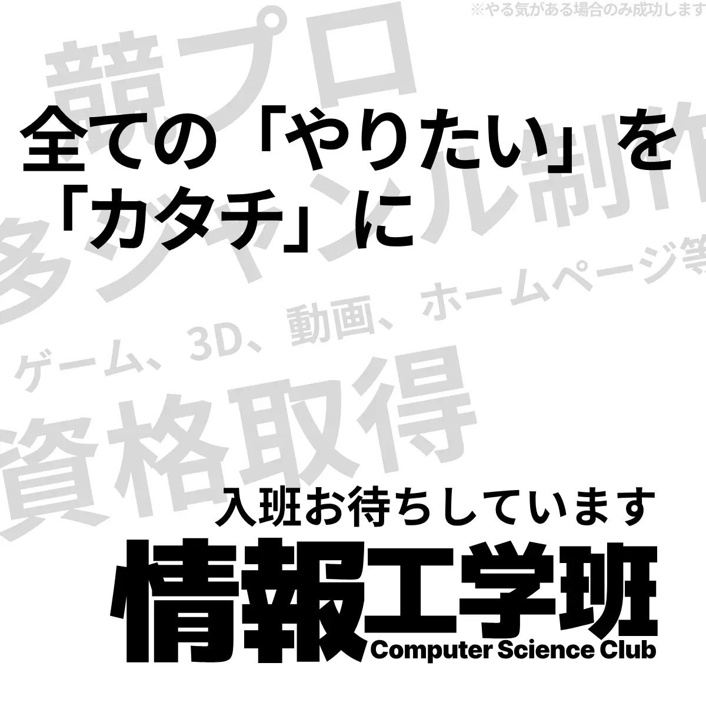
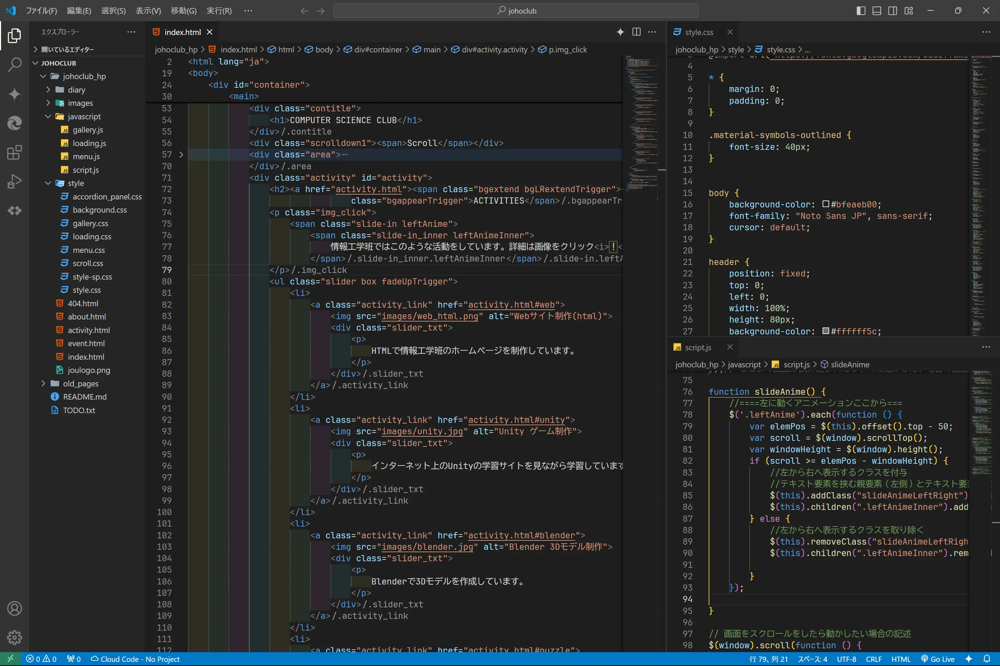
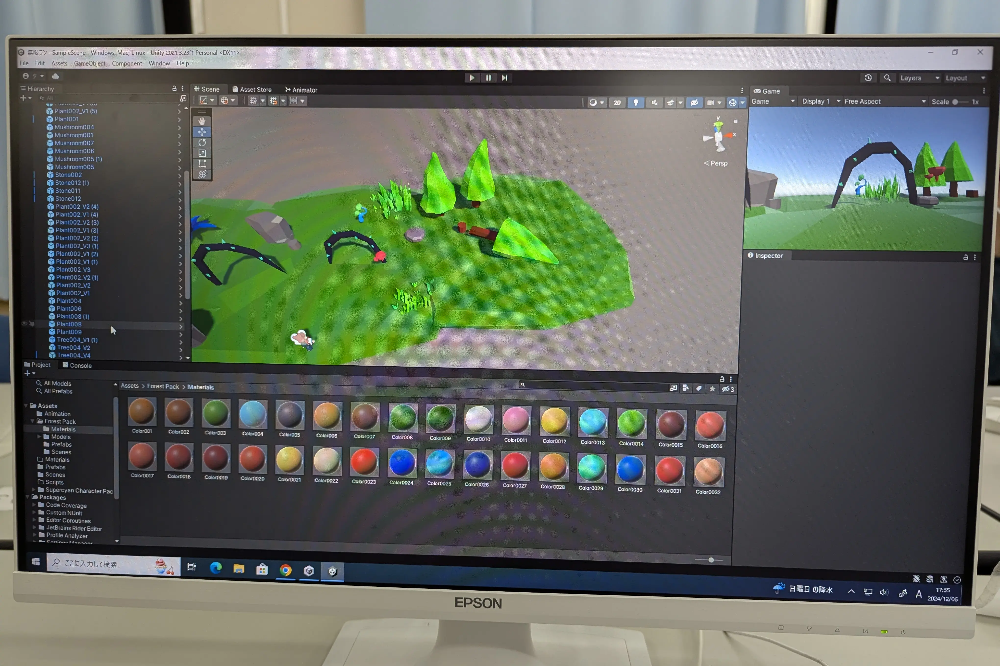
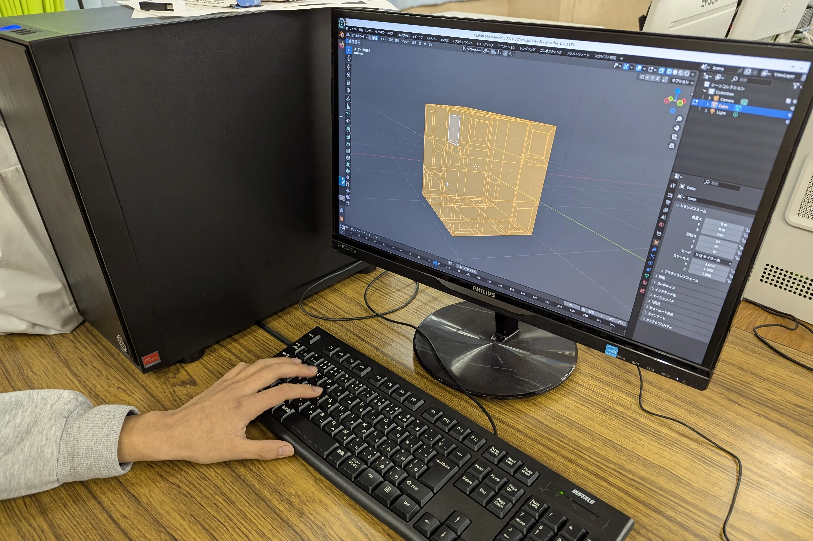
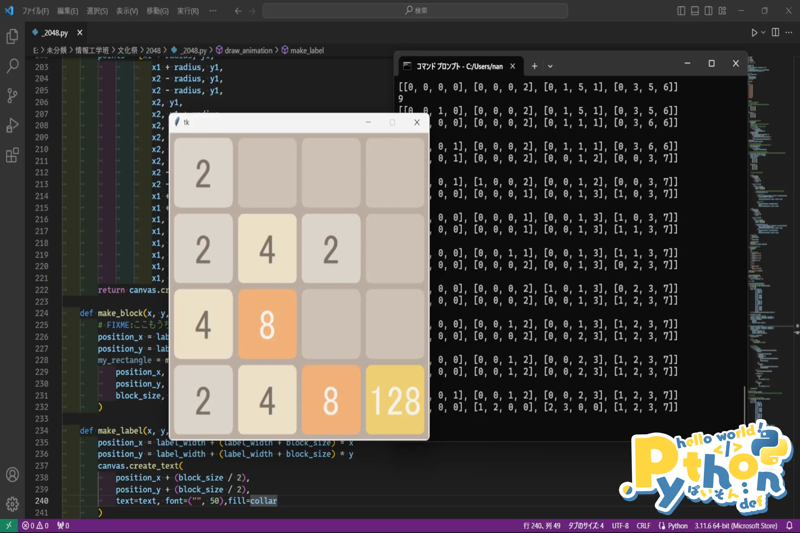
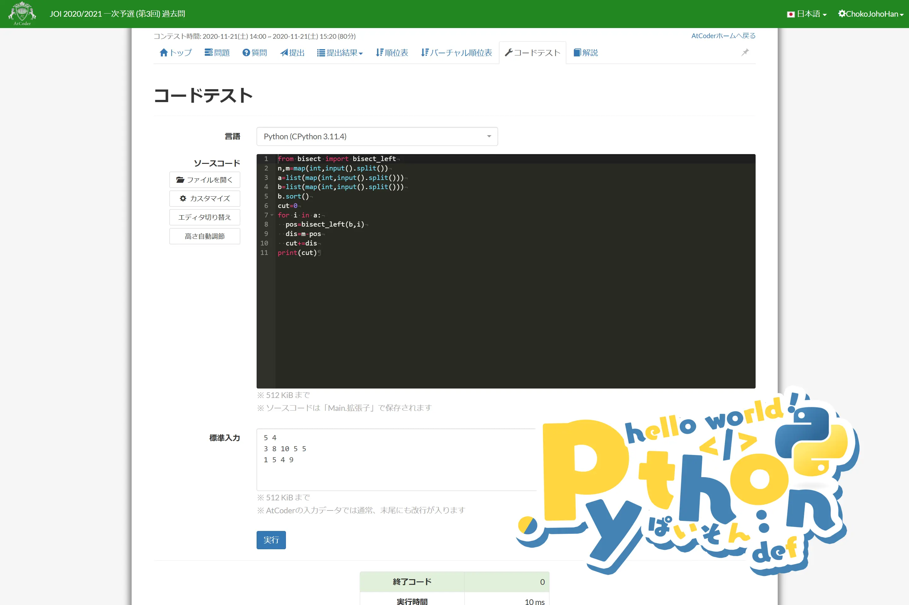
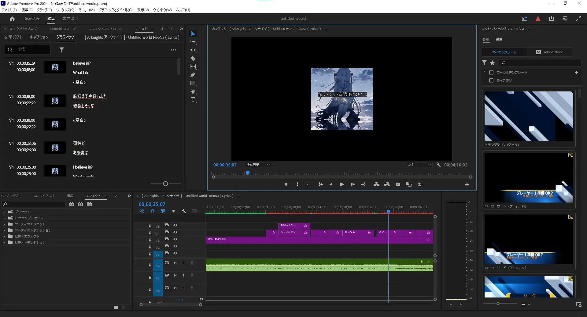
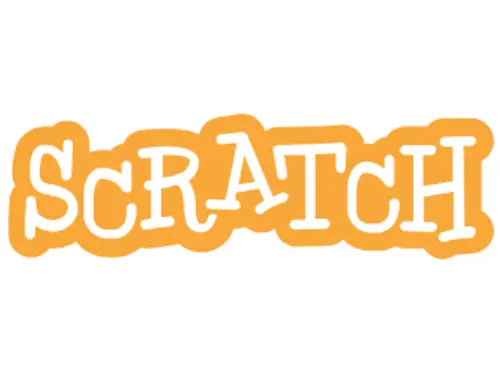

長野工業高等学校 情報工学班の公式ホームページです。 このホームページで情報班の活動内容や雰囲気を伝えられたら幸いです。 情報班では新入班員を募集しています。見学や体験に来て、入班してくれると嬉しいです！
あなたの「やりたい！」を「カタチ」にしよう！
情報班についての説明、強み、班員の検定資格取得状況、活動日、活動場所についてまとめました。

情報工学班について｜長野工業高等学校 情報工学班
情報班についての説明、強み、検定資格取得状況、活動日、活動場所についてまとめています。緩いけど活動はしっかりやる雰囲気を感じてもらい、情報班に入班してくれるとうれしいです。
情報工学班への入班お待ちしています!!
about.html
情報工学班ではこのような活動をしています。詳細は画像をクリック！

HTML, CSS, JavaScriptで情報工学班のホームページを制作しています。

インターネット上のUnityの学習サイトを見ながら学習しています。

Blenderで3Dモデルを作成しています。

PythonやTKinterを使用してパズルゲームを作りました。

情報オリンピックなどの競技プログラミングコンテストに参加しています。

Premiere Proで動画制作をしています。
情報工学班ではこのような外部活動の支援、班内特別活動を行っています。詳細は画像をクリック！
夏休みに小学生を対象にしたパソコン教室を開催しました。
学校開放 長工祭ではオリジナルTシャツプリント、作品の展示を行いました。
産業フェアin信州の中で行われたプログラミングゲーム体験会を講師として参加しました。

1年生がゲームなどの制作を行いました。その後、発表会を行いました。